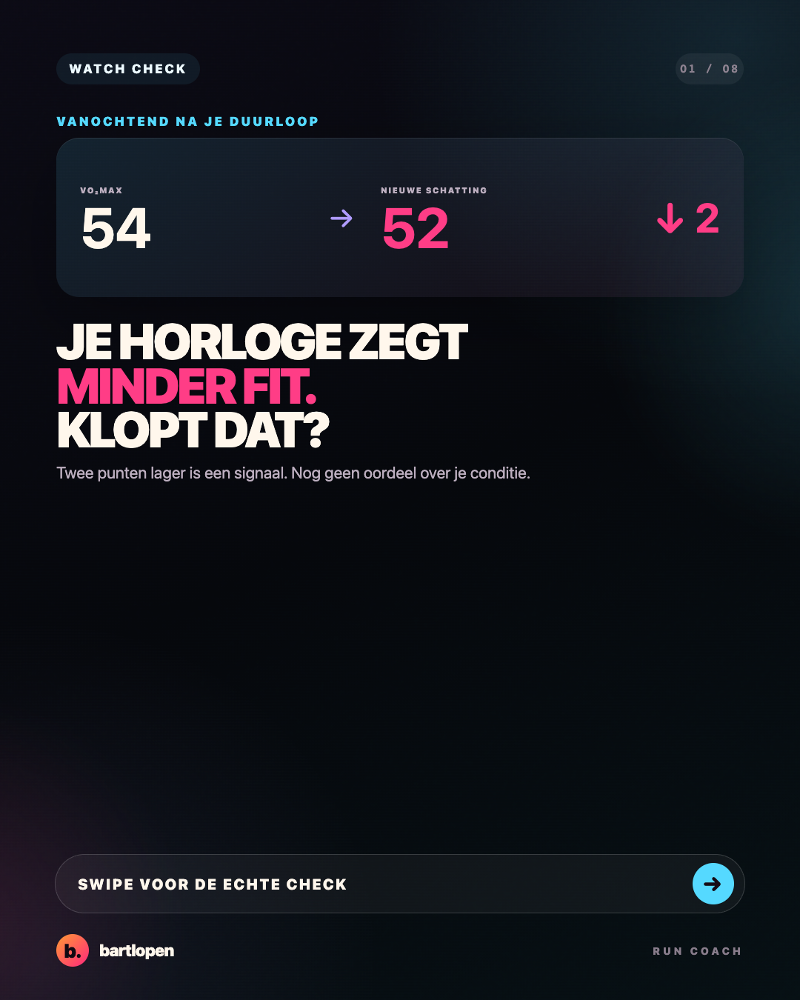
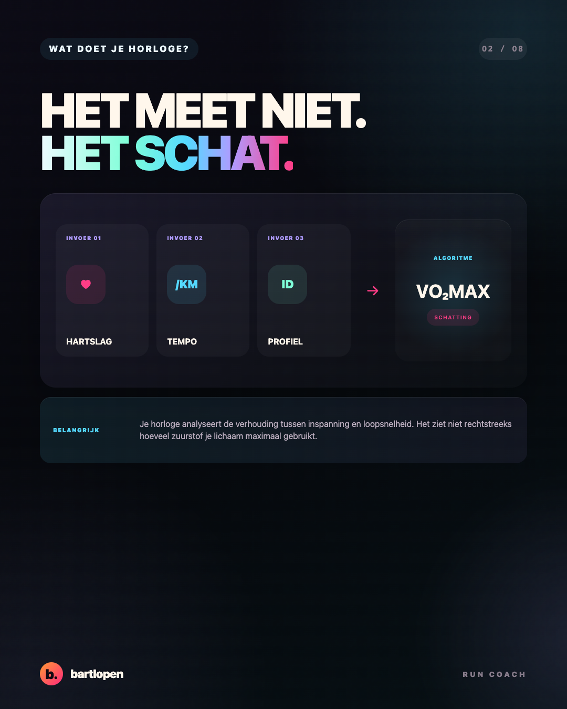
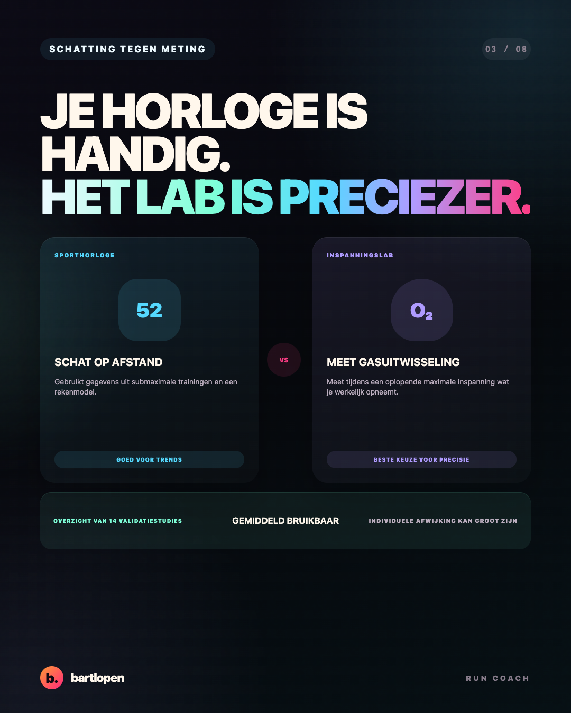
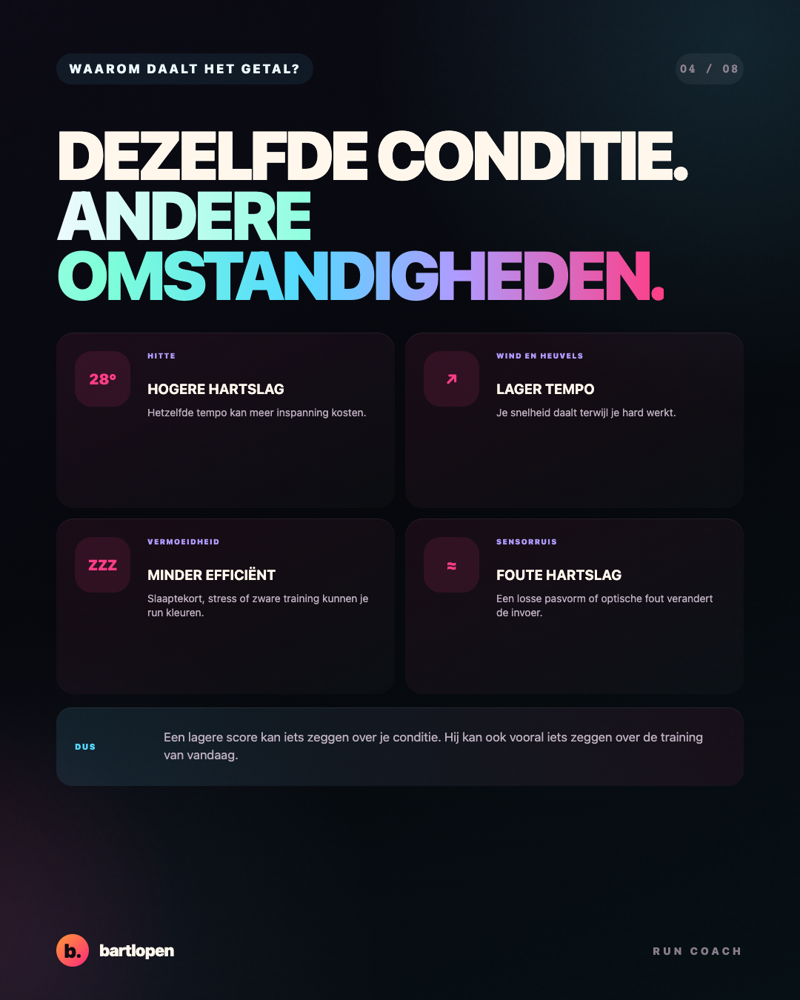
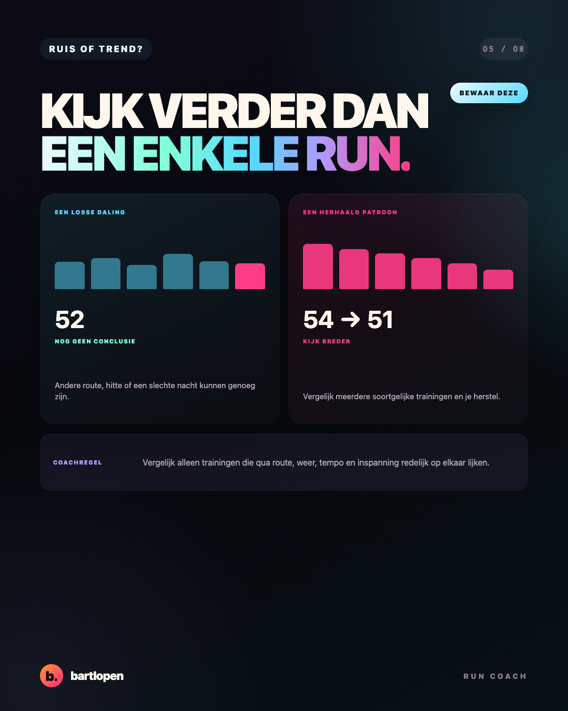
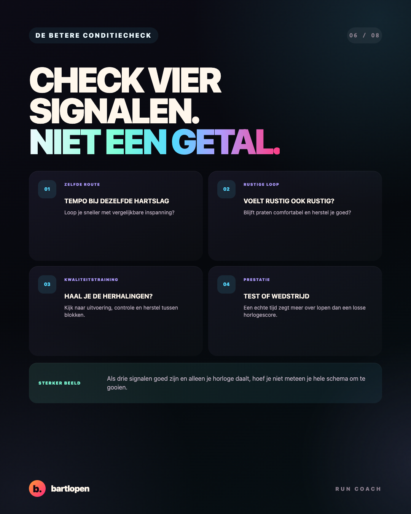
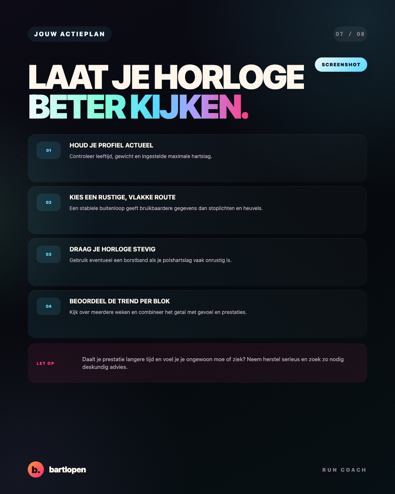
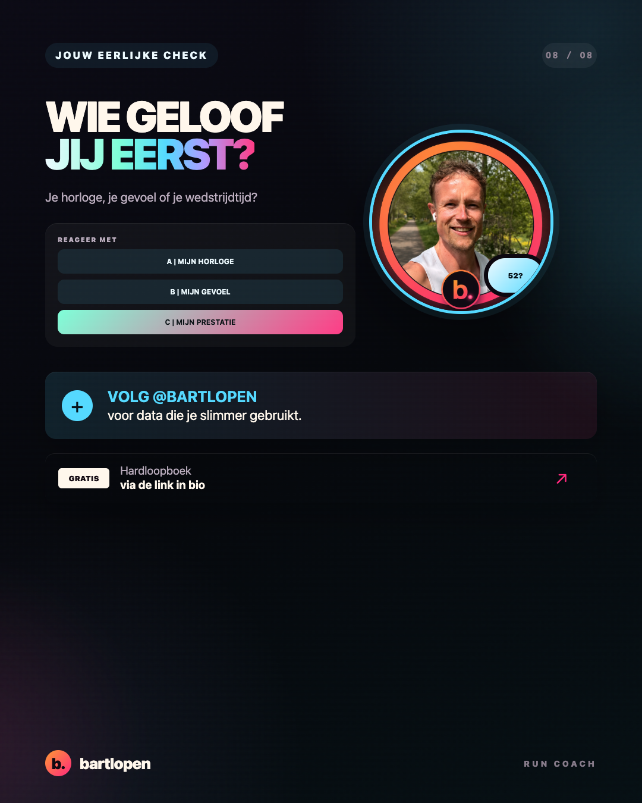

SLIDE 01 ↗Je VO2max
daalt
Acht heldere slides over wat je sporthorloge werkelijk schat, welke omstandigheden je score beïnvloeden en hoe je conditie beter beoordeelt.

SLIDE 02 ↗
SLIDE 03 ↗
SLIDE 04 ↗
SLIDE 05 ↗
SLIDE 06 ↗
SLIDE 07 ↗
SLIDE 08 ↗Caption
JE VO2MAX DAALT. JE CONDITIE OOK? 👀 Niet automatisch. Je sporthorloge meet tijdens je duurloop geen maximale zuurstofopname. Het maakt een schatting met gegevens zoals hartslag, tempo en je persoonlijke profiel. Daardoor kunnen hitte, wind, heuvels, vermoeidheid en een onrustige polshartslag je score beïnvloeden. Zelfs als je echte conditie nauwelijks is veranderd. Mijn betere conditiecheck: 🏃 vergelijk tempo en hartslag op dezelfde route 💬 kijk hoe een rustige duurloop voelt 🎯 controleer of je kwaliteitstrainingen nog lukken ⏱️ gebruik een test of wedstrijd als echte prestatiecheck 📈 beoordeel meerdere weken in plaats van één run Een horlogescore is nuttig als trend. Het is geen rapportcijfer voor je lichaam. Daalt het getal én loop je langere tijd minder goed? Dan verdient het aandacht. Daalt alleen het getal na een warme of rommelige training? Dan hoef je niet meteen je hele schema te veranderen. UITDAGING: kijk vandaag niet alleen naar je VO2max. Vergelijk je laatste drie soortgelijke trainingen en zoek het echte patroon. Wie geloof jij als eerste: A je horloge, B je gevoel of C je prestatie? 👇 #vo2max #sporthorloge #hardlopen #garminrunning #runningtips #hardloopcoach #bartlopen
Bronnen: een overzicht van veertien validatiestudies, een recente systematische review naar schattingen van VO2max, een validatieonderzoek bij getrainde duursporters en de technische uitleg van Firstbeat.